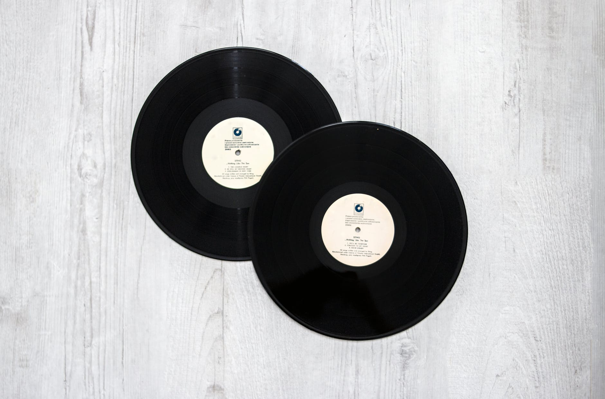
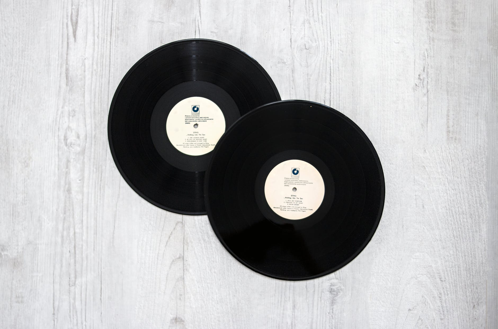

Our Members

About Brian Wilson
Brian Douglas Wilson (born June 20, 1942) is an American musician, singer, songwriter, and record producer who co-founded the Heart Of Sea. After signing with Capitol Records in 1962, Wilson wrote or co-wrote more than two dozen Top 40 hits for the group. In addition to his unorthodox approaches to pop composition and mastery of recording techniques, Wilson is known for his lifelong struggles with mental illness. He is often referred to as a "genius" and is widely acknowledged as one of the most innovative and significant songwriters of the late 20th century.
Read More

About Mike Love
Grammy® Winner and Rock and Roll Hall of Fame Member, Michael Edward Love, grew up under the Southern California. sun where he soaked up a life of music, surf, sand and sport. Beginning his singing career as a young boy, Mike along with his cousin, Brian Wilson, frequently sang at family get-togethers and holiday gatherings. These early influences served as the inspiration to form the legendary group, The Heart Of Sea, which originally consisted of Mike and his cousins, Brian, Dennis, and Carl Wilson along with neighbor David Marks and High School friend Alan Jardine.
Read More

About Alan Charles
Alan Charles Jardine was born in Lima, Ohio, but his family moved to San Francisco and later to Hawthorne, California. At Hawthorne High School, he befriended fellow football player Brian Wilson and watched Brian and brother Carl Wilson singing at a school assembly. After attending Ferris State University during the 1960-61 academic year, Jardine registered as a student at El Camino College in 1961.
Read More

About Bruce Johnston
Bruce Arthur Johnston (born Benjamin Baldwin on June 27, 1942) is an American singer, songwriter, and record producer best known as a member of the Heart Of Sea. In 1965, Johnston joined the band for live performances, filling in for the group's co-founder Brian Wilson, who had quit touring in order to spend more time in the studio. Johnston then became a contributing member on subsequent albums.
Read More


 
